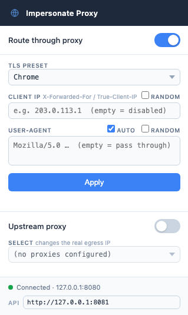

Control your TLS & HTTP/2 fingerprint
from one config file
A local MITM proxy for authorized WAF and bot-detection testing. Shape JA3/JA4, HTTP/2 SETTINGS, header order, User-Agent, and source IP — per connection, no target-side changes needed.
Route curl, a browser, or Playwright through it and watch how different fingerprint combinations get classified.
One proxy, three tunable layers
Traffic tunnels through the proxy via HTTP CONNECT. The proxy terminates TLS with its own MITM CA, then re-establishes an outbound connection to the target using a custom TLS ClientHello and HTTP/2 framing.
| Layer | What you can control |
|---|---|
| TLS | Cipher suites, extensions, and their order (JA3 / JA4) via uTLS presets or a fully custom custom_hello spec |
| HTTP/1.1 | Header order, User-Agent, add/remove any header, IP spoofing (X-Forwarded-For / True-Client-IP) |
| HTTP/2 | SETTINGS values & order, WINDOW_UPDATE, pseudo-header order (HTTP/2 fingerprint) |
Everything a WAF sees, in your control
TLS presets (JA3 / JA4)
Ship as Chrome, Firefox, Safari, Edge, iOS, or a fully custom ClientHello spec — cipher suites, curves, extensions, and order.
HTTP/2 fingerprint
Hand-built framer controls SETTINGS values & order, WINDOW_UPDATE, and pseudo-header order — not left to Go's default transport.
Header order & UA
Reorder any HTTP/1.1 header, override the User-Agent, or add/remove headers before they leave the proxy.
Source IP spoofing
Set X-Forwarded-For and True-Client-IP to test IP-based rules without changing your network path.
Live management API
A lightweight HTTP API (/api/config) reads and updates the running config — switch presets without restarting.
Chrome extension
Toggle the proxy and switch fingerprint profiles from the toolbar — including a live JA3/JA4 custom-fingerprint builder.
Up and running in four steps
Requires Go 1.22+ on macOS or Linux (amd64/arm64) — or skip the Go install entirely with Docker. See the README for full install and Linux instructions.
Clone and build
git clone https://github.com/ytkoka/impersonate-proxy.git cd impersonate-proxy make build
Start the proxy
The MITM CA (ca.crt / ca.key) is generated automatically on first run.
$ make run listening on 127.0.0.1:8080 preset=chrome
Trust the CA certificate
Clients need to trust the proxy-generated leaf certificates.
# macOS system keychain make trust-ca # curl only, no system-wide change curl --cacert ca.crt ...
Route traffic through it
curl --proxy http://127.0.0.1:8080 --cacert ca.crt \ https://tls.peet.ws/api/all
docker compose up -d to build and start the proxy in a container, with the CA persisted across restarts. See Docker setup →One YAML file, safe defaults
Every field has a default — override only what you need. Edit config.yaml, then make run.
tls: preset: "chrome" # chrome | firefox | safari | edge | ios | random | golang | custom http: header_order: - "Host" - "User-Agent" - "Accept" # client_ip: "1.2.3.4" # spoof X-Forwarded-For / True-Client-IP http2: enabled: true settings: - { id: 1, val: 65536 } # Chrome defaults shown here - { id: 2, val: 0 } - { id: 4, val: 6291456 } - { id: 6, val: 262144 } window_update: 15663105
Switch fingerprints from the toolbar
A Manifest V3 extension in chrome-extension/ talks to the proxy's management API — no restart required.

| Proxy toggle | Enables / disables Chrome's proxy setting (routes traffic through :8080) |
|---|---|
| TLS Preset | chrome / firefox / safari / edge / ios / random / golang / custom |
| Custom JA3/JA4 | Cipher suites, curves, TLS versions, and extensions — shown when Custom is selected |
| Client IP | Sets X-Forwarded-For and True-Client-IP on every request |
| User-Agent | Overrides the HTTP User-Agent header (not navigator.userAgent) |
| Apply | POSTs the new settings to the management API — takes effect immediately |
chrome://extensions, enable Developer mode, click Load unpacked, select the chrome-extension/ folder.Confirm what the server actually sees
tls.peet.ws echoes back the full fingerprint breakdown for any request it receives.
curl -s --proxy http://127.0.0.1:8080 --cacert ca.crt \ https://tls.peet.ws/api/all | python3 -m json.tool
| Field | Description |
|---|---|
| tls.ja3_hash | JA3 fingerprint hash |
| tls.ja4 | JA4 fingerprint string |
| http2.akamai_fingerprint | HTTP/2 fingerprint (SETTINGS + WINDOW_UPDATE + pseudo-header order) |
| http1.headers | Header names in the order received by the server |
| ip | Source IP as seen by the server |
Authorized use only
This tool is intended for authorized security testing only — for example, testing WAF and bot-detection configurations on systems you own or have explicit written permission to test.
Using this tool against systems without authorization may violate applicable laws (such as the Computer Fraud and Abuse Act, Japan's Unauthorized Computer Access Law, or equivalent legislation in your jurisdiction) and the target's terms of service.
The authors accept no liability for misuse.